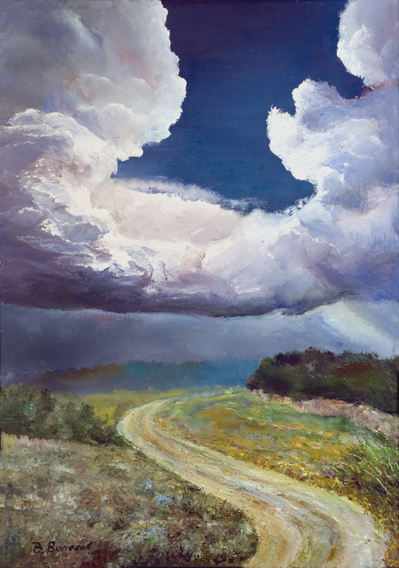
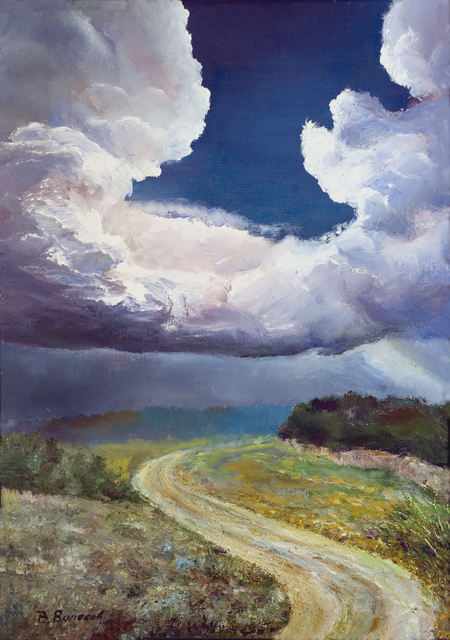

Welcome to our website

Nature, in the broadest sense, is the natural, physical, or material world or universe. "Nature" can refer to the phenomena of the physical world, and also to life in general. The study of nature is a large part of science. Although humans are part of nature, human activity is often understood as a separate category from other natural phenomena.
The word nature is derived from the Latin word natura, or "essential qualities, innate disposition", and in ancient times, literally meant "birth".Natura is a Latin translation of the Greek word physis (φύσις), which originally related to the intrinsic characteristics that plants, animals, and other features of the world develop of their own accord.The concept of nature as a whole, the physical universe, is one of several expansions of the original notion; it began with certain core applications of the word φύσις by pre-Socratic philosophers, and has steadily gained currency ever since. This usage continued during the advent of modern scientific method in the last several centuries.
Within the various uses of the word today, "nature" often refers to geology and wildlife. Nature can refer to the general realm of living plants and animals, and in some cases to the processes associated with inanimate objects–the way that particular types of things exist and change of their own accord, such as the weather and geology of the Earth.